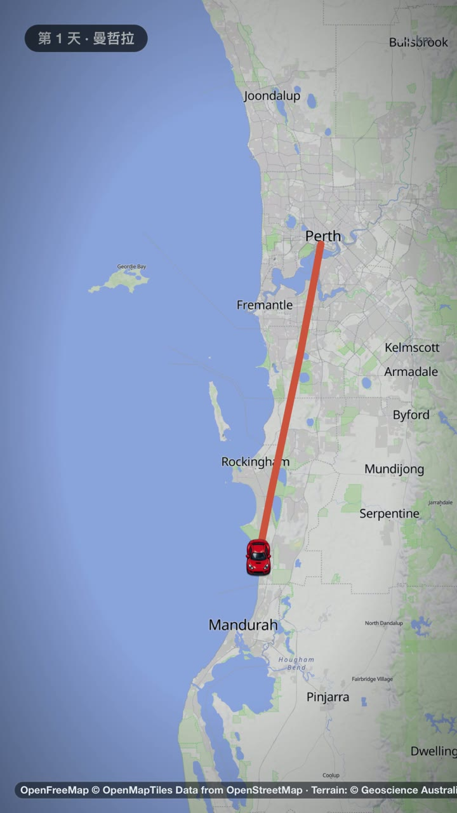
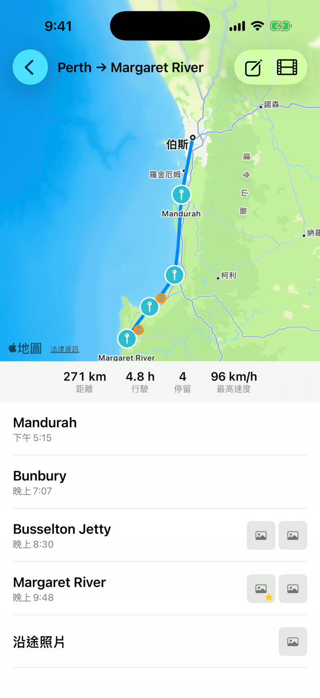
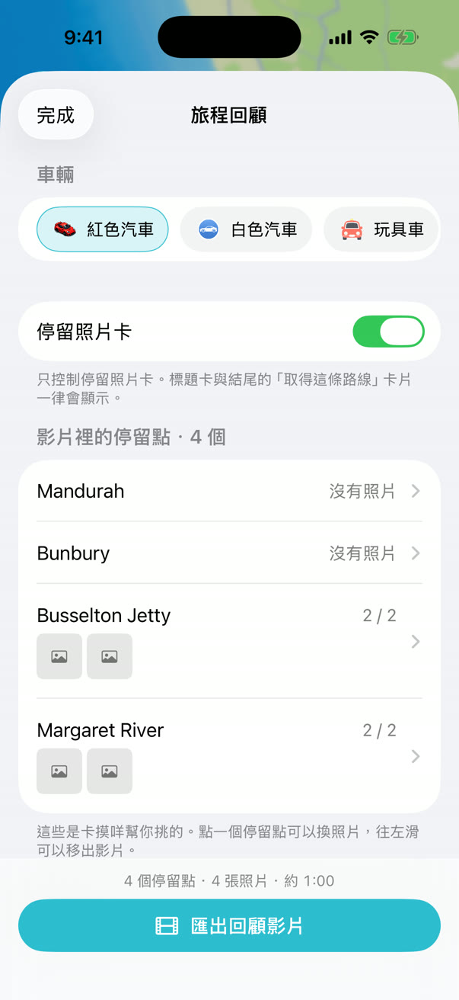
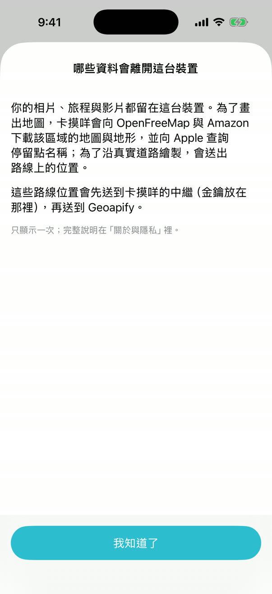

📷
自動找出你的旅程
卡摸咩看過你的照片，依拍攝時間與地點找出每一趟旅程，再把照片放回路線上的每個地點。也可以用日期範圍或相簿匯入一趟。
Kamome looks through your photos and finds each trip from when and where they were taken, then puts the photos back on the route. Or import one trip by date range or album.
公路旅行的回憶引擎 · A memory engine for road trips
卡摸咩讀取照片的拍攝時間與地點，找出你的每一趟旅程，重建你走過的路，再把它製作成一部值得收藏、值得分享的旅程影片。出發前不用開追蹤，回來也不用剪片。
Your trips are already in your photos. Kamome reads when and where they were taken, rebuilds the road you took, and turns each trip into a film worth keeping. Nothing to track before, nothing to edit after.
Import once. Keep forever.
卡摸咩看過你的照片，依拍攝時間與地點找出每一趟旅程，再把照片放回路線上的每個地點。也可以用日期範圍或相簿匯入一趟。
Kamome looks through your photos and finds each trip from when and where they were taken, then puts the photos back on the route. Or import one trip by date range or album.
路線盡量貼著真正走過的道路；只是推測的路段，就誠實地畫成推測。
Routes follow real roads where they can, and a guess is always drawn as a guess.
挑一台車、一首歌，地圖、路線與照片就編排成一部旅程影片，存到照片或直接分享。
Pick a vehicle and a song, and the map, route and photos become a film to save or share.
出發時按下開始，卡摸咩在背景記錄路線，結束旅程的那一刻就停止。
Tap start and Kamome records the route in the background until you end the trip.
從整片大陸拉近到出發點，小車沿著路線一站一站開過去，地點的照片一張張翻開。汽車、露營車、火車、馬車，甚至是馴鹿，隨你挑。
From the whole continent down to the start line, a little car drives your route stop by stop while the photos from each place fan out. A car, a camper, a train, a horse carriage, even a reindeer: your pick.

Screens · 測試版畫面，與正式版可能略有不同 / From a test build; the released app may look slightly different



照片、旅程與影片都存在你的裝置上。沒有帳號、沒有廣告、沒有追蹤。為了畫地圖與比對道路而送出的資料，App 裡一條一條寫清楚。
Your photos, trips and films stay on your device. No accounts, no ads, no tracking, and the app tells you exactly what is sent and why.
閱讀隱私權政策 · Privacy Policy →News